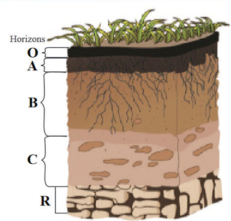

Analyse the results: Compare the results of the plant in the control pot (with good circulation of soil air) to the plant in the experimental pot (with limited circulation of soil air).
Explain why you think the results happened the way they did.
Exercise 2.1
Given that you have a vegetable garden with soil that stays very wet for a long time.
Explain how this can harm your plants and suggest two ways to improve the soil’s water movement.
Give at least two ways farmers can use to improve the nutrient content of soil in their vegetable garden.
Suppose you are a farmer with a small garden and one day you notice that your plants are not growing well and the soil seems compacted.
What are actions would you take to improve that soil and why those actions?
Soil profile
When you dig a vertical section through the soil, you can see different layers. This vertical section is called a soil profile. The layers in the soil profile are known as soil horizons. They are called horizons because they spread horizontally from side to side. There are four major horizons in a soil profile found in undisturbed soils. These are horizons O, A, B and C (refer to Figure 2.2).
